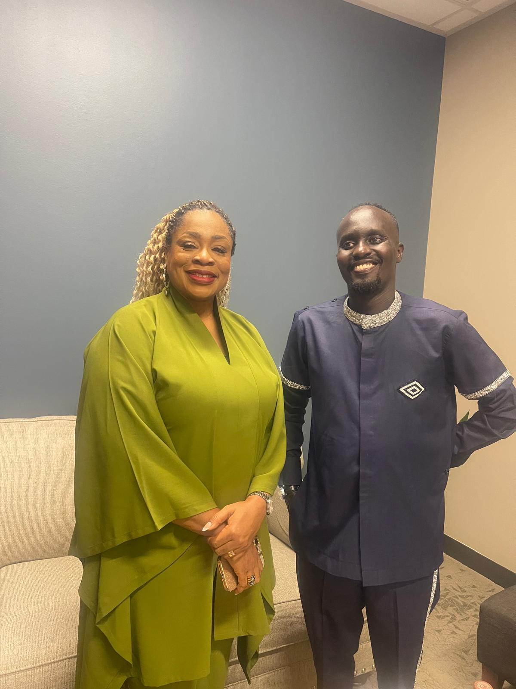
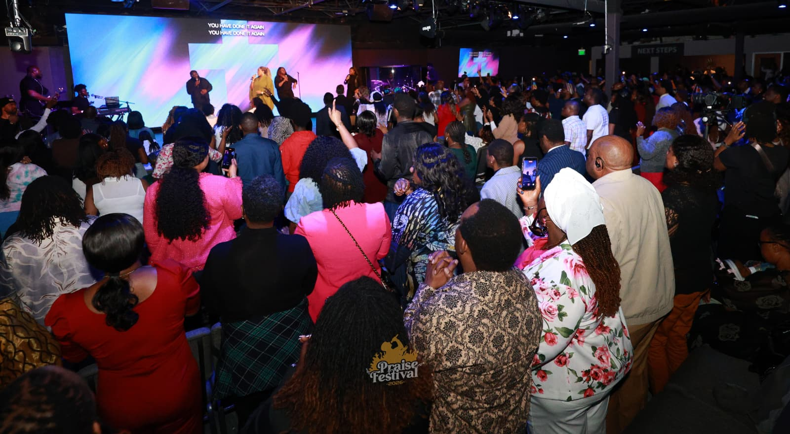
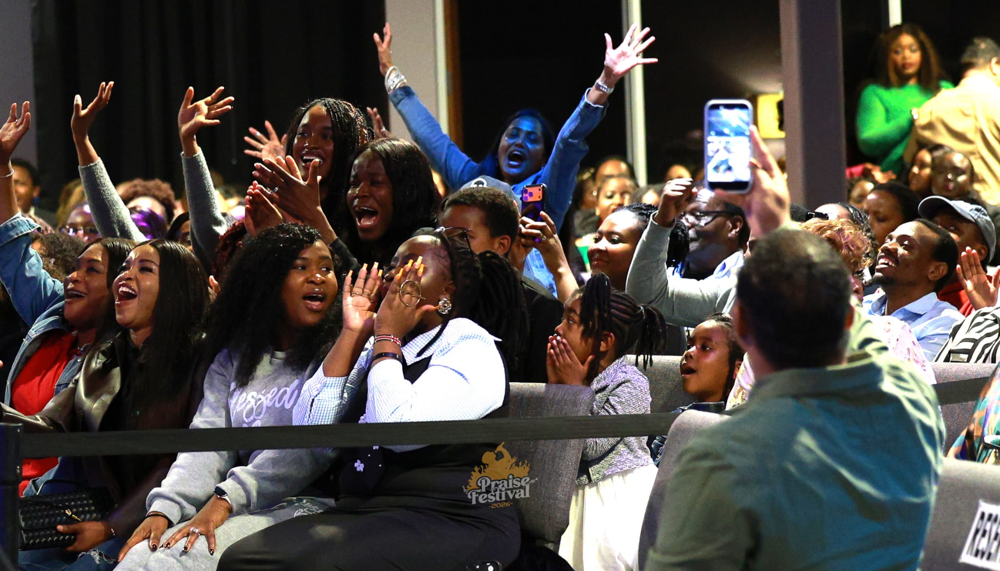
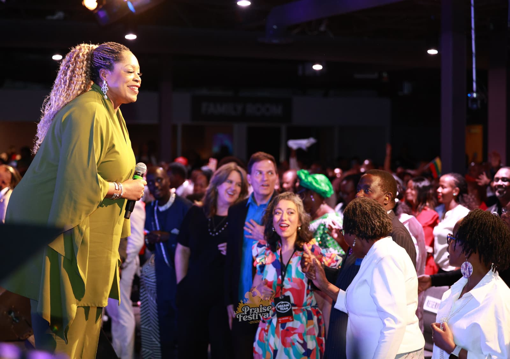
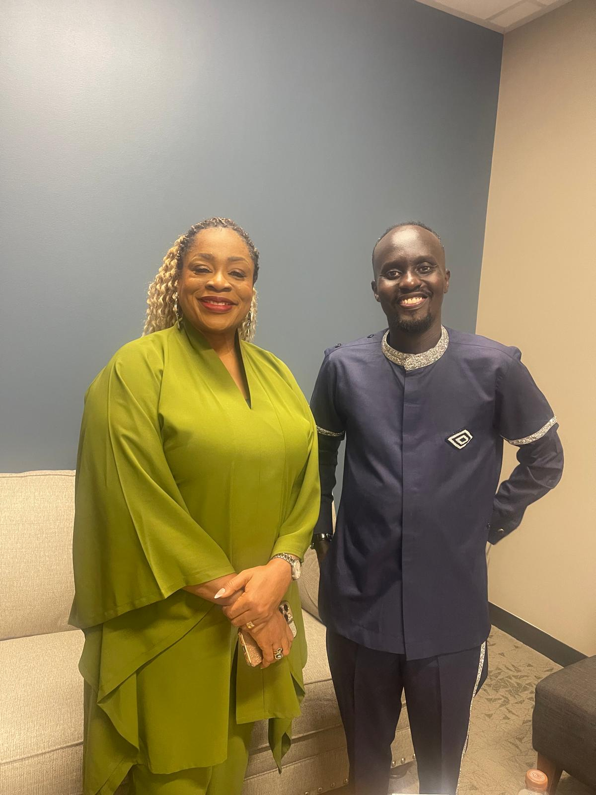
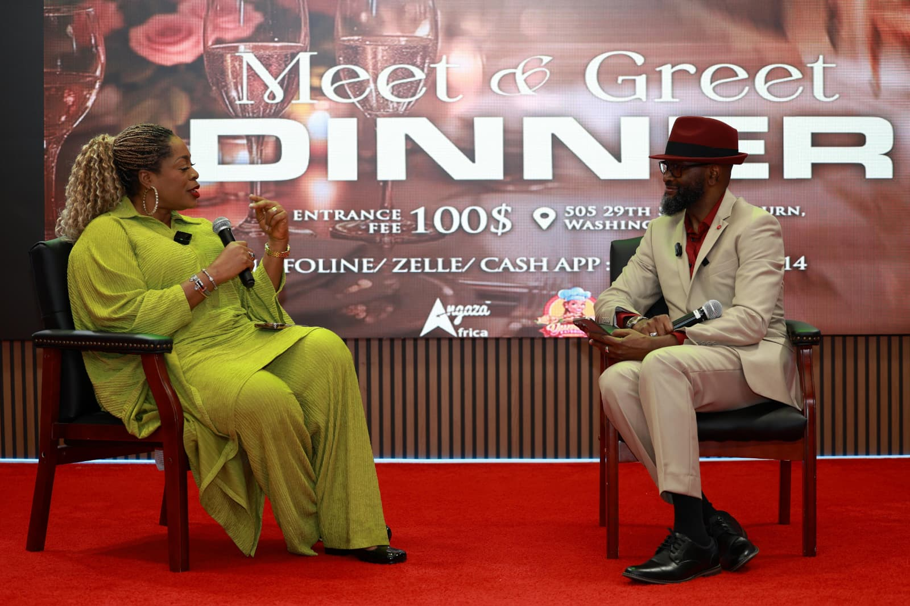
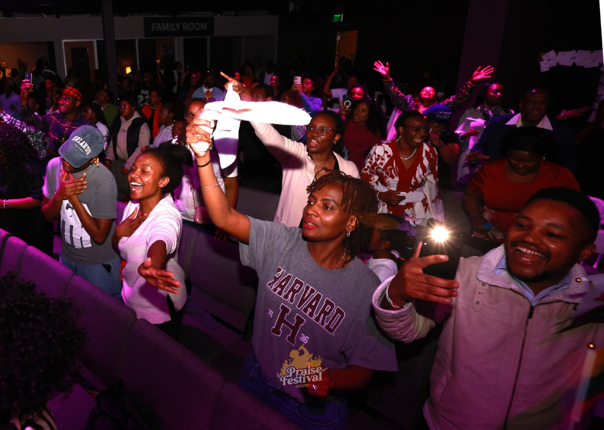
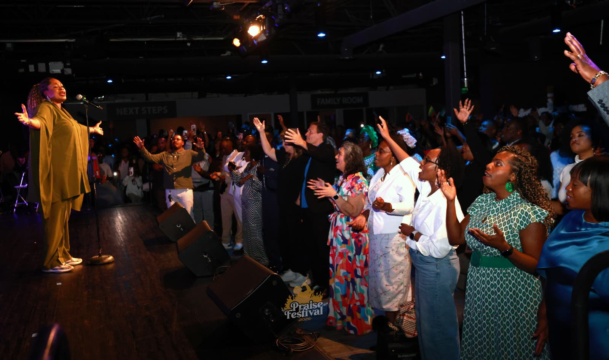

About Angaza Africa
A movement built on worship, service, and one founder's conviction.
Angaza Africa exists because Eugene Mutegetsi believed Africa and her diaspora were never meant to grow apart — and that worship, service, and the gospel were the way to keep them one family.

Eugene Mutegetsi, Founder
The founder's story
From the diaspora, for the diaspora
Eugene Mutegetsi founded Angaza Africa out of a conviction that took shape across two continents: that the Africans building new lives abroad and the communities they came from are still bound to one another — in faith, in family, and in responsibility.
He saw a diaspora hungry for worship that felt like home, and a homeland — particularly in Rwanda and the DRC — still carrying the weight of genocide, displacement, and poverty. Rather than treat those as separate concerns, Eugene built Angaza Africa to hold both at once: a platform for worship and artist development that gathers the diaspora together, and a foundation that puts real resources into survivor care, children's education, and refugee relief on the ground.
Under his leadership, Angaza Africa grew from a single gathering into Praise Festival — now in its fourth edition — alongside an active humanitarian foundation and a missions arm dedicated to evangelism. Every part of the organization still answers to the same conviction he started with: worship that unites, service that heals, and a gospel that saves.
Why we exist
Mission & vision
Our mission
To unite Africans and the African diaspora through worship, humanitarian outreach, and community transformation — meeting practical needs in Rwanda and the DRC while gathering the global African family around a shared faith.
Our vision
A generation of Africans and diaspora believers who see themselves as one family across borders — worshiping together, caring for one another's most vulnerable, and carrying the gospel forward together.
How we work
The three pillars, in detail



Worship events and artist development
Angaza Music produces worship gatherings that bring African and diaspora artists onto the same stage, most visibly through Praise Festival — our flagship annual event. Beyond the festival, this pillar invests in developing emerging worship artists, giving them platforms, mentorship, and an audience that spans continents.



Humanitarian work in Rwanda and the DRC
The Foundation is where Angaza's commitment to service becomes tangible: supporting genocide survivors and widows with healthcare, funding children's education in Rwanda, and delivering food relief to refugees in the Democratic Republic of Congo. It is funded and sustained by the wider Angaza community — through Praise Festival, community dinners, and direct giving.



Evangelism and salvation-focused outreach
Angaza Missions carries the gospel directly into communities across Africa and the diaspora. Where Angaza Music gathers and Angaza Foundation serves, Missions exists to make sure the message at the center of it all — salvation — reaches people directly, through outreach, evangelism, and discipleship.